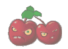

Plants vs. Zombies, rebuilt as a C++ desktop game.
A C++17/SFML tower-defense project featuring grid-based plant placement, seed packets, automatic sun collection, projectile combat, multiple zombie types, level progression, saved progress, win/loss states, and looping background music.
Gameplay Video
This embedded video shows the project running as a native desktop game, including the start menu, seed bank, plant placement, zombie waves, projectiles, and the overall gameplay loop.
Project Overview
| Area | Description |
|---|---|
| Core Gameplay | Grid-based lawn placement, seed packet selection, plant costs, cooldowns, projectile combat, zombie waves, and win/loss states. |
| Plants | SunFlower, Peashooter, WallNut, CherryBomb, SnowPea, and Repeater are implemented with their own behavior. |
| Zombies | BasicZombie, ConeheadZombie, fast zombie, and tough zombie variants appear across the level progression. |
| Progress & Audio |
The game saves local progress in save_progress.txt
and automatically loops a supported soundtrack file from the
soundtrack/ folder.
|

Build & Run
CMake 3.16 or newer, a C++17 compiler, and SFML 3.0 or newer.
brew install sfmlRun both commands from the project root.
cmake -S . -B build
cmake --build buildLaunch the native desktop executable after building.
./build/Game
If the project is moved or cloned into a new folder, run
cmake -S . -B build again before
cmake --build build. The generated build/
folder should not be pushed to GitHub.
Controls & Soundtrack
| Input | Action |
|---|---|
| Mouse | Click Adventure, select seed packets, and place plants on the lawn grid. |
M |
Pause or resume background music. |
N |
Toggle sound-effect state for future action sounds. |
R |
Reset saved progress from the start menu. |
Q / Esc |
Quit the game. |
The game scans soundtrack/, Soundtrack/,
assets/soundtrack/, and assets/Soundtrack/
for .ogg, .wav, .flac,
.aiff, or .mp3 files.
Plant Damage Summary
Pea and snow-pea projectiles each deal 1 damage.
Repeater fires two peas per attack cycle. CherryBomb defeats any
current zombie type with one explosion if the zombie is inside its
blast radius.
| Plant | Fast Zombie | BasicZombie | Tough Zombie | ConeheadZombie |
|---|---|---|---|---|
| Peashooter | 6 hits | 7 hits | 10 hits | 14 hits |
| SnowPea | 6 hits + slow | 7 hits + slow | 10 hits + slow | 14 hits + slow |
| Repeater | 3 volleys | 4 volleys | 5 volleys | 7 volleys |
| CherryBomb | 1 explosion | 1 explosion | 1 explosion | 1 explosion |
Software Systems & Data Structures
| Concept | How It Appears in the Game |
|---|---|
| 2D Array / Grid |
The lawn is stored as a fixed 9 x 5 grid using
std::array, so each cell can hold one plant.
|
| Vector / Dynamic Array |
std::vector manages active projectiles, sun
tokens, and zombies as they appear and disappear.
|
| Map / Caching |
ResourceManager caches loaded textures with
std::map<std::string, sf::Texture>.
|
| Inheritance / Polymorphism |
Base classes such as Plant and Zombie
allow each plant and zombie type to keep its own behavior.
|
| Finite State Machine |
The game switches between Start,
Adventure, PlantsWon, and
ZombiesWon scenes.
|
Credits & Notes
The UI folder and related visual assets used by this project come from lixing-hust/plants_vs_zoombie . Credit goes to that repository for providing those UI assets.
Some UI artwork and text are currently Chinese because they come from the available asset set. Gameplay source code and upload-facing C++ files are kept in English.
Next improvements include individual sound-effect files for planting, shooting, collecting sun, and explosions, plus continued level balance tuning from playtesting.